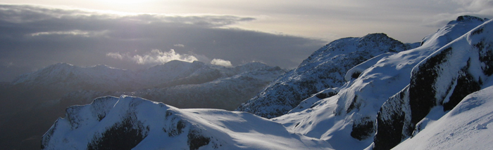

Publications
Peer-reviewed publications
Planetesimal impact vapor plumes and nebular shocks form chondritic mixtures.
Stewart, S. T., S. J. Lock, P. J. Carter, E. J. Davies, R. G. Kraus, S. Root, M. I. Petaev and S. B. Jacobsen. The Planetary Science Journal . In press. ArXiv preprintExploring the catastrophic regime: Thermodynamics and fragmentation in head-on planetary collisions.
Dou, J., P. J. Carter, S. J. Lock and Z. M. Leinhardt. Monthly Notices of the Royal Astronomical Society , 534, 1, 758–782, doi: 10.1093/mnras/stae2134, 2024. ArXiv preprintAtmospheric loss in giant impacts depends on pre-impact surface conditions.
Lock, S. J. and S. T. Stewart. The Planetary Science Journal . 5, 28, doi: 10.3847/PSJ/ad0b16, 2024 ArXiv preprintA planetary collision afterglow and transit of the resultant debris cloud.
Kenworthy*, M., S. J. Lock* , G. Kennedy*, R. van Capelleveen*, E. Mamajek*, L. Carone*, F.-J. Hambsch, J. Masiero, A. Mainzer, J. D. Kirkpatrick, E. Gomez, Z. M. Leinhardt, J. Dou, P. Tanna , A. Sainio, H. Barker, S. Charbonnel, O. Garde, P. Le Du, L. Mulato, T. Petit, and M. R. Smith. Nature 622, 251–254, doi: 10.1038/s41586-023-06573-9251–254, 2023. ArXiv preprint. *These authors contributed equally to this work.Origin of the Moon.
Canup, R. M., K. Righter, N. Dauphas, K. Pahlevan, M. Ćuk, S. J. Lock, S. T. Stewart, J. Salmon, R. Rufu, M. Nakajima, and T. Magna. Reviews in Mineralogy and Geochemistry 89 (1), 53102, doi: 10.2138/rmg.2023.89.02, 2023. Part of the New views of the Moon II volume. ArXiv preprintThe lithophile element budget of Earth's core.
Chidester*, B. A., S. J. Lock*, K. E. Swadba, Z. Rahman, K. Righter and A. J. Campbell. Geochemisty, Geophysics, Geosystems 23, e2021GC009986, doi: 10.1029/2021GC009986, 2022. *B. A. Chidester and S. J. Lock are co-first authors.Long-term Earth-Moon evolution with high-level orbit and ocean tide models
Daher H., B. K. Arbic, J. G. Williams, J. K. Ansong, D. H. Boggs, M. Müller, M. Schindelegger, J. Austermann, B. D. Cornuelle, E. B. Crawford, O. B. Fringer, H. C. P. Lau, S. J. Lock, A. C. Maloof, D. Menemenlis, J. X. Mitrovica, J. A. M. Green and M. Huber. JGR: Planets 126, e2021JE006875, doi: 10.1029/2021je006875, 2021.Tidal evolution of the Earth-Moon system with a high initial obliquity
Ćuk, M., S. J. Lock, S. T. Stewart and D. Hamilton. The Planetary Science Journal 2, 147, doi: 10.3847/PSJ/ac12d1, 2021. ArXiv preprintThe shock physics of giant impacts: Key requirements for the equations of state.
Stewart, S. T., E. J. Davies, M. S. Duncan, S. J. Lock, S. Root, J. P. Townsend, R. G. Kraus, R. Caracas and S. B. Jacobsen. AIP Conference Proceedings 2272, 080003, doi: 10.1063/12.0000946, 2020. ArXiv preprintClustering-informed cinematic astrophysical data visualization with application to the Moon-forming terrestrial synestia.
Aleo, P. D., S. J. Lock, D. J. Cox, S. A. Levy, J. P. Naiman, A. J. Christensen, K. Borkiewicz, and R. Patterson. Astronomy and Computing 33, 100424, doi: 10.1016/j.ascom.2020.100424, 2020. ArXiv preprintGeochemical constraints on the origin of the Moon and preservation of ancient terrestrial heterogeneities
Lock, S. J., K. R. Bermingham, R. Parai, and M. Boyet. Space Science Reviews 216, 109, doi: 10.1007/s11214-020-00729-z, 2020. PreprintThe energy budgets of giant impacts.
Carter, P. J., S. J. Lock and S. T. Stewart. JGR: Planets 125, e2019JE006042, doi: 10.1029/2019JE006042, 2020. ArXiv preprintThe energy budget and figure of Earth during recovery from the Moon-forming giant impact.
Lock, S. J., S. T. Stewart and M. Ćuk. EPSL 530, pp 115885, doi: 10.1016/J.EPSL.2019.115885, 2020. ArXiv preprintGiant impacts stochastically change the internal pressures of terrestrial planets.
Lock, S. J. and S. T. Stewart. Science Advances 5, eaav3746, doi: 10.1126/sciadv.aav3746, 2019. ArXiv preprintThe origin of the Moon within a terrestrial synestia
Lock, S. J., S. T. Stewart, M. I. Petaev, Z. M. Leinhardt, M. T. Mace, S. B. Jacobsen and M. Ćuk. JGR: Planets 123, pp 910-951, doi:10.1002/2017JE005333, 2018. ArXiv preprintThe structure of terrestrial bodies: Impact heating, corotation limits and synestias
Lock, S. J. and S. T. Stewart. JGR: Planets 122, pp 950-982, doi:10.1002/2016JE005239, 2017. ArXiv preprintTidal evolution of the Moon from a high-obliquity, high-angular-momentum Earth
Ćuk, M., D. Hamilton, Lock, S. J. and S. T. Stewart. Nature 539, pp402-406, doi:10.1038/nature19846, 2016.
In progress
Student advisees underlined.
Atmospheric loss during giant impacts: Mechanisms and scaling of near- and far-field loss.
Roche, M. J., S. J. Lock , J. Dou, P. J. Carter, J. A. Kegerreis, and Z. M. Leinhardt. In revision.Asteroids fail to retain cometary impact signatures.
Joiret, S., G. Avice, L. Ferriere, Z. M. Leinhardt, S. J. Lock, A. Mechineau, and S. N. Raymond. In review.A tectonically active early Earth driven by the tidal recession of the Moon
Lock, S. J. Submitted.Can we detect moon-forming impacts in other star systems?
Tanna, P., S. J. Lock, S. T. Hodgkin, and A. Bonsor. In prep.An automated method for identification of synestias.
Kleine, I. and S. J. Lock. In prep.Thermal effects of collisions during rocky planet accretion.
Postema, A. N., S. J. Lock, and S. T. Stewart. In prep.
Other publications
HERCULESv1_user: HERCULES planetary structure code (Version v1.0.0).
Lock, S. J. Zenodo, http://doi.org/10.5281/zenodo.3509365, 2019.Equation of State Model Forsterite-ANEOS-SLVTv1.0G1: Documentation and Comparisons (Version v1.0.0).
Stewart, S. T., E. J. Davies, M. S. Duncan, Megan, S. J. Lock, S. Root, J. P. Townsend, and S. B. Jacobsen. Zenodo, http://doi.org/10.5281/zenodo.3478631, 2019.Origin Story.
Lock, S. J., and S. T. Stewart. Scientific American, CCCXX, 7, 2019.Making the Moon: The legacy of Apollo.
Lock, S. J. The Geographer, Summer, 2019.A new theory of how the Moon formed.
Lock, S. J. Scientific American, 2017.